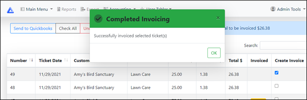
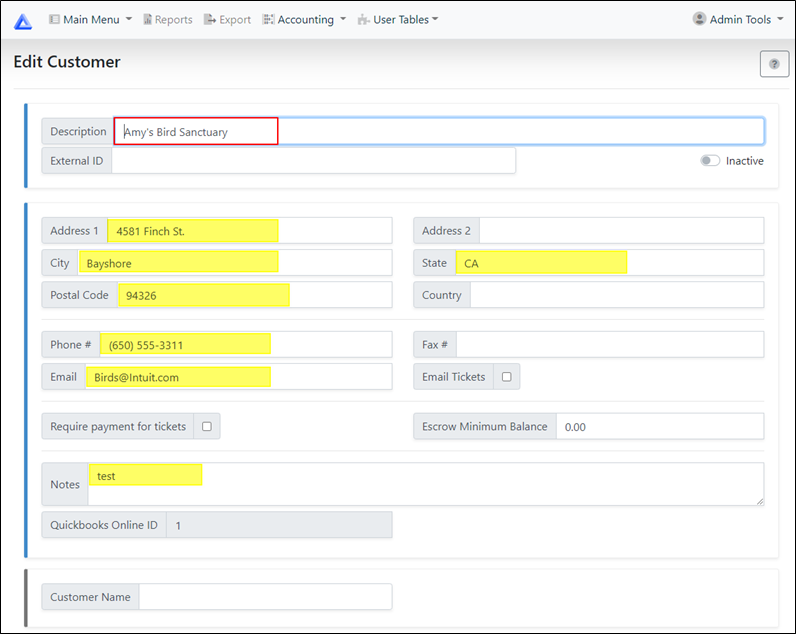

Quickbooks Online
Fulcrum allows for integration with Quickbooks Online (for customers on Tier 2 or higher)
From the main Fulcrum menu, click on the Accounting menu and click Quickbooks Online to open the sign in window for quickbooks.
Enter your quickbooks login details to sign in. *Note: To use Fulcrum with quickbooks, your quickbooks user will need need admin permissions.
After signing in, you will see the main Quickbooks Online Interface.
From here, you can send ticket invoices, pull customer data and pull products data from quickbooks.
Invoicing
Under Create Invoices, click the button.
The Invoicing main screen will show all completed (unpaid) tickets in Fulcrum.
Place a check in the Create Invoice box to the right for the Ticket Number(s) you would like to send to Quickbooks Online.
If you would like to send all Invoices to Quickbooks Online, click the  button at the top of the screen.
button at the top of the screen.
To deselect all Invoices from the list, click the button.
At the top right of the screen you can see the Total of all invoices you are sending to Quickbooks.
When you are finished selecting your invoices, click the button.
After you click the 'Send to Quickbooks' button a message will be displayed saying your invoices selected have been sent.
A yellow message box indicates that not all selected tickets were sent (click Ok on the message to see the error details).
A red message box indicates that no invoices were sent (click Ok on the message to see the error details).

If the ticket(s) are successfully sent, the invoiced box for the ticket will now show .
Filtering Tickets for Invoicing
To limit the number of Invoices that that show, you can narrow down the results by clicking the button.
Once you've entered your dates and customer(s), click the button to display the Invoices for the criteria selected.
From Date |
Select the date you would like to start filtering from |
To Date |
Pick the date you would like to stop filtering. |
Customer |
Leave blank for all customers, or type in the name of the customer you would like to filter. |
|
|
|
Invoicing Options
To see additional Invoicing options, click the button at the top of your screen.
Mark invoices to be emailed |
Marks invoices to be emailed in Quickbooks. |
Mark invoices to be printed |
Marks invoices to be printed in Quickbooks. |
Review invoices in Quickbooks
You can now see the invoices you sent from Fulcrum in your Quickbooks Online.
The Invoice will show the Product, Description, QTY, Rate and Tax details (for all line items) that are on the Fulcrum ticket.
Get Customer Data
Click on the button on the Online Interface menu.
Get Customer Data allows users to pull your Customers from Quickbooks Online into your Fulcrum Customer List.
Customers can only be synced from Quickbooks Online to Fulcrum. You cannot push Customers from Fulcrum to Quickbooks Online.
From the list of Customers, place a check in the Add to Fulcrum box to the right for the Customers you would like to send to Fulcrum.
If you would like to send all Customers from Quickbooks Online to Fulcrum, click the  button at the top of the screen.
button at the top of the screen.
To deselect all Customers from the list, click the  button at the top of your screen.
button at the top of your screen.
If you would like to go back to the main screen, click the button at the top of your screen.
Once you've selected your Customers to send to Fulcrum, click on the button at the top of your screen.
After the sync process, you will see a message that your Customers have been synced successfully to Fulcrum.
Under the Main Menu in Fulcrum, click on Customers.
The Customers you sent over from Quickbooks will now show in your Fulcrum Customer List.
If you click on Edit to the right of a Customer you pulled over from Quickbooks, you can see that the Customers data that is applicable to Fulcrum has been brought over, as well.
All customers synced from Quickbooks will have a 'Quickbooks Online ID'
*Note: If you have changed any Customer information in Fulcrum, pulling that Customer from Quickbooks will overwrite your changes you made in Fulcrum.

Get Product Data
From the Quickbooks Online Interface, you can pull product data from Quickbooks over to Fulcrum.
Click the 'Get Product data' button on the main interface page.
Before you can sync a product, you will need to click the 'Select Income Account' button and type in the account you would like to use.
From the sync products menu, you can now select the products you would like to bring over to Fulcrum.
If you would like to pull all products from Quickbooks Online, click the button at the top of the screen.
To deselect all Products from the list, click the button.
You can also manually select which products you would like to sync by placing a check mark in the 'Add to Fulcrum' box for the products you want to sync.
When finished selecting, click the 'Sync Products' button on the top of the screen.
If the sync was successful. you will see a green 'Sync Complete' message. Click ok to return to the sync products menu.
A yellow message box indicates that not all selected products were synced successfully (click Ok on the message to see the error details).
A red message box indicates that no products were synced (click Ok on the message to see the error details).
You should now see your synced product(s) in your Fulcrum Product list.
All products synced from Quickbooks will have a 'Quickbooks Online ID'
Created with the Personal Edition of HelpNDoc: Full-featured Help generator